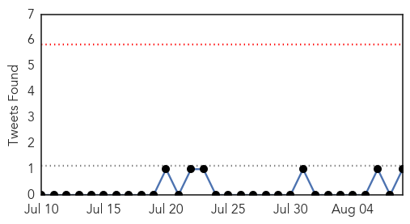

30 Day Trends
Web: 0 alerts, 0 warnings
Twitter: 0 alerts, 0 warnings
Top Articles:
- 0.997
- Tests show South Korean in Slovakia probably does not have Mers
- 0.994
- NYC Legionnaires' Disease Outbreak May Be Slowing
- 0.987
- Officials Warn About Cyclospora Outbreak in Canada
- 0.959
- Health teams sent to test NYC for bacterial outbreak that's killed 10
- 0.959
- Health teams sent to test NYC for bacterial outbreak that's killed 10
- 0.959
- New York City Legionnaire's Disease Outbreak, Symptoms and Treatment: Outbreak kills 10 in Bronx, 100 Infected
- 0.942
- Health officials search for source of Legionnaires' disease in NE Ohio after death
- 0.938
- NYC deploys teams to test for Legionnaires
- 0.917
- Chicago Tribune
- 0.917
- Chicago Tribune
- 0.917
- Chicago Tribune
- 0.917
- Chicago Tribune
- 0.917
- Chicago Tribune
- 0.917
- Chicago Tribune
- 0.916
- Are you prone to deadly Shingles?
- 0.910
- UPDATE: Danville hospital locks down emergency room as it evaluates patient
- 0.902
- Two Die of Mad Cow Disease in Italy
- 0.902
- Two More Fatalities In New York City Legionnaires' Outbreak, No New Cases Reported
- 0.893
- Ministry takes precautionary measures against new virus
- 0.891
- N.Y. officials to test South Bronx areas for Legionnaires'
- 0.890
- New York City outbreak of Legionnaire’s easing
- 0.888
- Over 400 hospitalised with diarrhoea in Kolkata
- 0.887
- New York governor taking action after deadly illness
- 0.876
- NYC health officials get handle on Legionnaires' Disease outbreak
- 0.863
- WCAX.COM Local Vermont News, Weather and Sports-
- 0.835
- New plague death confirmed in Colorado - KTVQ.com
- 0.829
- The Post
- 0.813
- DNR Confirms 3rd Case Of Chronic Wasting Disease In Deer; Hunter Participation ‘Critical’ This Fall « CBS Detroit
- 0.811
- Emergence of fatal horse disease cause for concern in P.A.
- 0.802
- New York Governor Cuomo announces State Department of Health to provide free Legionella testing
- 0.798
- Outbreak Of Cyclospora Under Investigation
- 0.790
- Doctors have to now watch out for ‘less fatal’ strain of malaria too
- 0.779
- Rare cat virus not seen in 30 years
- 0.773
- Cyclospora in Canada: PHAC and CFIA investigate
- 0.772
- Colorado resident is 2nd to die of plague there this year
- 0.727
- Girl contracts the plague in Yosemite
- 0.706
- Contaminated cilantro causes gastrointestinal illness outbreak in the U.S.
- 0.693
- DOH validating reports of 'mysterious' illness downing 70 people in Bukidnon
- 0.681
- Child Contracts Plague after Yosemite Trip
- 0.677
- French couple die in US desert, nine-year-old son rescued
- 0.677
- Rwandan peacekeepers killed in shooting in Central African Republic
- 0.672
- 3 more ways hospitals and clinicians can improve health literacy
- 0.658
- California child diagnosed with plague
- 0.655
- Bulgarian authorities should provide preventive measures for diseases like anthrax
- 0.652
- Johns Hopkins looks to computer code to identify sepsis
- 0.641
- Funding Shortfall ‘Cripples Humanitarian Operations’
- 0.607
- Shellbrook hospital access restricted due to outbreak
- 0.607
- ICYMI: Source of Buckhead Parasite Discovered
- 0.583
- One Eleuthera Foundation Hosts 4th Annual Pathway to Wellness Symposium
- 0.582
- Legionnaires' disease in the Bronx alerts NYC
Showing top 50 articles...
Top Tweets:
- 0.736
- RT: Législatives en Haiti : "nous espérons un taux de participation de 20%", Castillo Barrantes, chef mission observation éle…
- 0.590
- Saudis report +3 MERS cases in Riyadh. They've reported 12 cases there this week. Clearly there is an outbreak. 1/2 http://t.co/6eW2QUPC4O
Web/News Articles

Tweets
Article Locations

Article Confidences